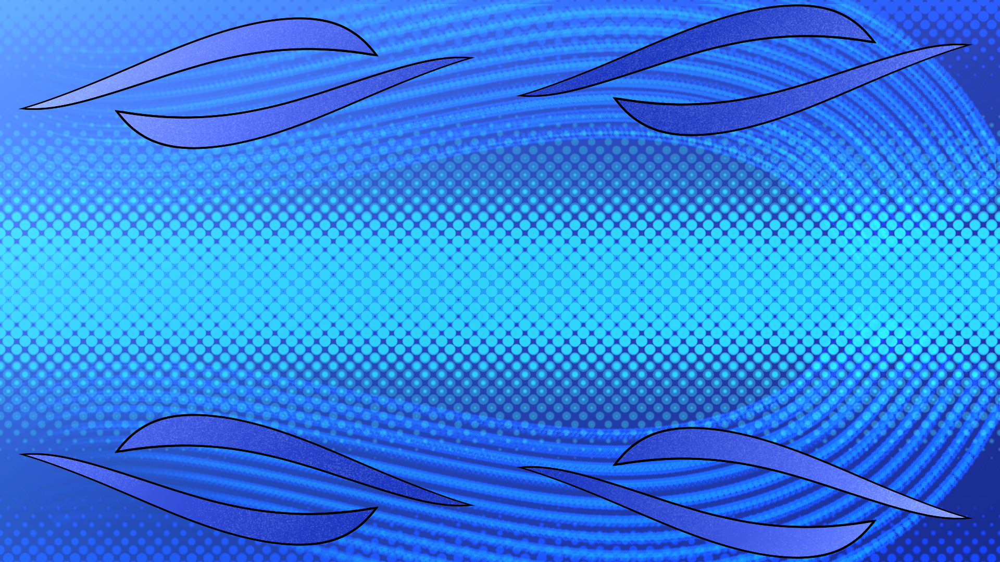

I have been drawing for about 20 years. Starting with traditional pen and paper, I have since moved on to digital art. I draw with an anime artstyle because shows and games with that artstyle have had a big influence on me.
I like to draw fanart of my favorite characters as well my original creations. What inspired me were older anime like .hack//sign and Full Metal Alchemist, the nuanced story telling and appealing artstyle of those shows really drew me in and I wanted to draw in a similar style. What I really want to get into is video game development and it's been a dream of mine ever since playing The Legend of Zelda: Majora's mask.